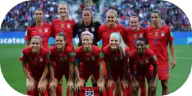
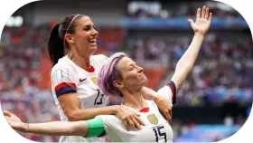
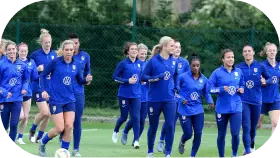

Féminisme dans le football : l’affaire de la fédération américaine
Depuis la coupe du monde 2019, le football féminin est de plus en plus médiatisé. Beaucoup de personnes redécouvrent
ce sport, si connu, grâce à l'expansion médiatique et professionnelle des joueuses. Depuis plus de 10 ans, une
équipe fait parler d'elle pour ces exploits sur le terrain mais aussi pour ces icônes mondiales. Il s'agit de
l'équipe de football féminine Américaine.

L’équipe féminine de football américaine
Des stars qui font parler d’elles !
La USWNT (United States women's national soccer team) est considérée comme l'une des meilleures équipes du monde.
Depuis plus de 10 ans, elle enchaîne les trophées et possède un palmarès incroyable. La sélection américaine ne
se fait pas que remarquer pour ces performances, certaines de ces joueuses sont, tout simplement, devenues des
symboles médiatiques à part entière !
Tout l'effectif de l'équipe est de qualité cependant, deux joueuses sortent du lot. Que ce soit dans le jeu ou en
dehors du terrain, Alex Morgan et Megan Rapinoe se font remarquer. En effet, au fur et à mesure des années, ces
deux joueuses ont récolté une certaine notoriété. Alex Morgan est l'icône américaine typique. Fille parfaite et
égérie des marques, elle représente parfaitement la puissance américaine. Son aisance à l'oral et sa prestance
font d'elle un symbole mondial mais surtout une référence pour les femmes ! Effectivement, sa position lui permet
de rompre le cliché comme quoi le football est réservé aux hommes.

Alex Morgan et Megan Rapinoe
Totalement l'inverse pour sa coéquipière et capitaine lors de la coupe du monde 2019 : Megan Rapinoe. Élu
ballon d'or en 2019, elle est une des meilleures si ce n'est la meilleure des joueuses de l'équipe. En
dehors des terrains, elle se fait remarquer pour les combats qu'elles mènent. Violences policières
contre les personnes noires, communauté LGBT+ et amélioration de la représentation du football féminin,
autant de combats qu'elle soutient avec fermeté.
Elle utilise sa notoriété et son franc-parler pour mettre en avant les inégalités homme-femme dans le
sport mais aussi dans la vie de tous les jours. Après la victoire des États-Unis à la coupe du monde
2019, elle a carrément refusé de se rendre à la maison blanche car elle est contre la politique de
Donald Trump.
L’attaque en justice des joueuses
En 2019, une affaire éclate entre la fédération américaine de football et les joueuses de l'équipe
nationale. Les footballeuses dénoncent l'inégalité salariale entre les hommes et elles. En effet, on
constate une énorme différence de salaire entre les hommes et les femmes. Pour l'équipe masculine,
l'USSF (la fédération américaine) a déversé 5,3 millions de dollars lors de la coupe du monde 2014
tandis que l'équipe féminine n'a reçu que 1,7 million de dollars de prime. Le pire dans tout cela est
que les hommes n'ont atteint que les huitièmes de finale alors que les femmes ont gagné la compétition.
Les joueuses à l’entrainement
Pour les matchs amicaux, c'est la même chose. Pour 20 matchs amicaux joués et gagnés, les joueuses peuvent
gagner au maximum 99 000 dollars. Les hommes, eux, peuvent toucher jusqu'à 263 320 dollars. Le problème
dans ces chiffres est que l'équipe féminine a des résultats exceptionnels alors que ce n'est pas le cas pour
les hommes. Les 28 joueuses ont donc décidé de porter plainte.
La plainte aurait pu être remise en cause. Effectivement, l'audience et l'argent engendrés par les deux
équipes sont un facteur important dans ce débat. L'équipe faisant plus de bénéfices mérite forcément plus de
primes. Cependant, l'équipe féminine fait clairement plus d'audience. On connaît mieux le foot féminin aux
États-Unis que le foot masculin. Donc, l'inégalité que subit les féminines est clairement injustifiée.

Megan Rapinoe reçue par Joe Biden
Malheureusement, la plainte d'égalité salariale a été refusée. Megan Rapinoe s'est exprimée sur twitter après
l'annonce. Elle a posté : "We will never stop fighting for equality". En effet, les joueuses américaines ne
comptent pas se laisser faire et elles feront tout pour que l'égalité homme-femme soit enfin respectée.